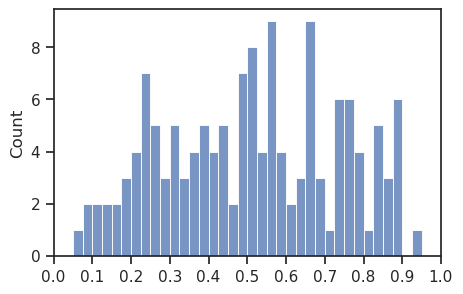
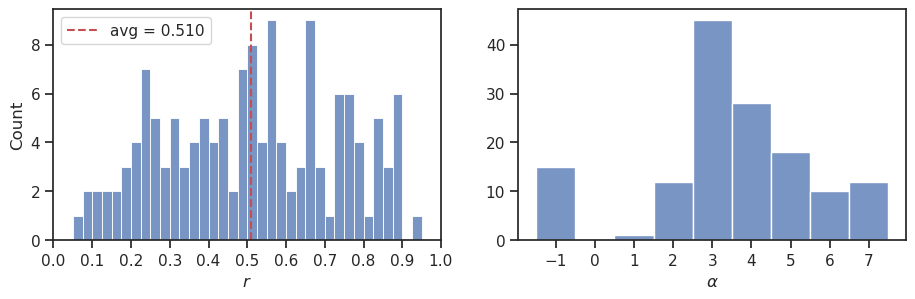
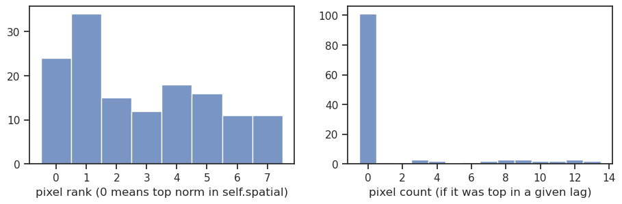
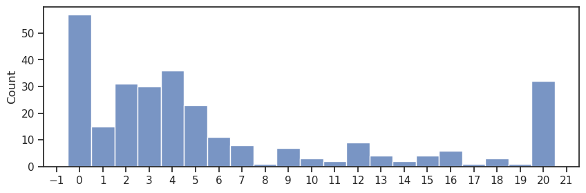
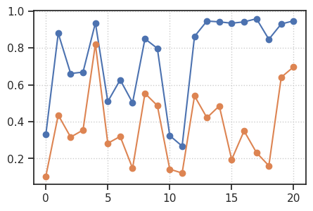

(20) Load and plot readout results#
Motivation:
Show code cell source
# HIDE CODE
import os, sys
from IPython.display import display
# tmp & extras dir
git_dir = os.path.join(os.environ['HOME'], 'Dropbox/git')
extras_dir = os.path.join(git_dir, 'jb-MTMST/_extras')
fig_base_dir = os.path.join(git_dir, 'jb-MTMST/figs')
tmp_dir = os.path.join(git_dir, 'jb-MTMST/tmp')
# GitHub
sys.path.insert(0, os.path.join(git_dir, '_MTMST'))
from vae.train_vae import TrainerVAE, ConfigTrainVAE
from vae.vae2d import VAE, ConfigVAE
from figures.fighelper import *
from analysis.glm import *
# warnings, tqdm, & style
warnings.filterwarnings('ignore', category=DeprecationWarning)
from rich.jupyter import print
%matplotlib inline
set_style()
Load#
from base.utils_model import load_model
tr, metadata = load_model(
model_name='fixate1_k-32_z-13x[3,6,12]_enc(1x3)-dec(1x2)-pre(1x3)-post(1x3)',
fit_name='ep400-b1000-lr(0.002)_beta(0.2:1x0.3)_lamb(0.0001)_gr(1000)_(2023_04_15,21:35)',
device='cpu', # 'cuda',
checkpoint=-1,
)
print(f"'checkpoint': {metadata['checkpoint']}")
'checkpoint': 400
# grads = metadata['stats']['grad']
# plt.semilogy(grads.keys(), grads.values(), marker='.');
thresholds = [
tr.cfg.grad_clip * i for i in
[1, 2, 5, 10, 20, 50, 100, 200]
]
bad = np.array(list(grads.values()))
t = PrettyTable(['Threshold', '#', '%'])
for thres in thresholds:
tot = (bad > thres).sum()
perc = tot / metadata['global_step']
perc = np.round(100 * perc, 3)
t.add_row([thres, tot, perc])
print(t, '\n')
+-----------+-----+-------+ | Threshold | # | % | +-----------+-----+-------+ | 400.0 | 511 | 0.608 | | 800.0 | 30 | 0.036 | | 2000.0 | 24 | 0.029 | | 4000.0 | 22 | 0.026 | | 8000.0 | 18 | 0.021 | | 20000.0 | 15 | 0.018 | | 40000.0 | 14 | 0.017 | | 80000.0 | 12 | 0.014 | +-----------+-----+-------+
nf = sum(tr.model.ftr_sizes()[0].values())
nf
2752
Load Readout#
fit_name = 'fixate1_nf-2752_(2023_04_20,19:16)'
path = pjoin(tr.model.cfg.results_dir, 'Ridge', fit_name)
perf_raw, perf_all, alpha_all = [], [], []
pix_ranks, pix_counts = [], []
for f in tqdm(sorted(os.listdir(path))):
if not f.endswith('.pkl'):
continue
root = f.split('.')[0]
root, expt = root.split('-')
kws = dict(
tr=tr,
root=root,
expt=expt,
verbose=False,
)
ro = Readout(**kws).load(fit_name, 'cuda:2')
perf_raw.extend(list(ro.perf.values()))
alpha_all.extend([m.alpha for m in ro.mod.values()])
if ro.max_perf is not None:
for i, r in ro.perf.items():
perf_all.append(r / ro.max_perf[i])
else:
perf_all.extend(list(ro.perf.values()))
# pixel stuff
for idx, best in ro.best_pix.items():
rank = np.where(np.all(
ro.sorted_pix[idx] == best,
axis=1
))[0][0]
count = collections.Counter([
tuple(e) for e in
ro.best_pix_all[idx]
])
count = count.get(best, 0)
pix_ranks.append(rank)
pix_counts.append(count)
100%|████████████████████████████████████████████| 7/7 [00:00<00:00, 101.15it/s]
len(perf_all), np.mean(perf_raw), np.mean(perf_all)
(5, 0.35037239953398946, 0.35037239953398946)
perf_all
[0.13161761655338194,
0.29448376830763395,
0.3702581506090746,
0.4104967780190537,
0.5450056841808034]
ax = sns.histplot(perf_all, bins=np.linspace(0, 1, 41))
ax.locator_params(axis='x', nbins=10)
ax.set(xlim=(0, 1));

fig, axes = create_figure(1, 2, (11, 3))
sns.histplot(perf_all, bins=np.linspace(0, 1, 41), ax=axes[0])
avg = np.mean(perf_all)
axes[0].axvline(avg, color='r', ls='--', label=f"avg = {avg:0.3f}")
axes[0].locator_params(axis='x', nbins=10)
axes[0].set(xlabel=r'$r$')
axes[0].legend()
axes[0].set_xlim(0, 1)
sns.histplot(np.log10(alpha_all), bins=np.linspace(-1, 8, 10) - 0.5, ax=axes[1])
axes[1].locator_params(axis='x', nbins=10)
axes[1].set(ylabel='', xlabel=r'$\alpha$')
plt.show()
avg

0.5104418015793724
fig, axes = create_figure(1, 2, (11, 3))
sns.histplot(pix_ranks, bins=np.linspace(0, 8, 9) - 0.5, ax=axes[0])
axes[0].locator_params(axis='x', nbins=10)
axes[0].set(ylabel='', xlabel='pixel rank (0 means top norm in self.spatial)')
sns.histplot(pix_counts, bins=np.linspace(0, 14, 15) - 0.5, ax=axes[1])
axes[1].locator_params(axis='x', nbins=15)
axes[1].set(ylabel='', xlabel='pixel count (if it was top in a given lag)')
plt.show()

best_lag_all = []
for f in tqdm(sorted(os.listdir(path))):
if not f.endswith('.pkl'):
continue
root = f.split('.')[0]
root, expt = root.split('-')
kws = dict(
tr=tr,
root=root,
expt=expt,
verbose=False,
)
ro = Readout(**kws).load(fit_name, 'cuda:2')
best_lag_all.extend(list(ro.best_lags))
100%|██████████| 61/61 [00:02<00:00, 28.95it/s]
fig, ax = create_figure(1, 1, (10, 3))
sns.histplot(best_lag_all, bins=np.linspace(0, 21, 22) - 0.5, ax=ax)
ax.locator_params(axis='x', nbins=24)

ro.name()
'YUWEI-ytu029'
ro.perf
{0: 0.1040044907322527,
1: 0.4360466153773416,
2: 0.31633306447742704,
3: 0.3544574026497518,
4: 0.8206905335123917,
5: 0.2828317705477584,
6: 0.31989903465936664,
7: 0.14737506487696467,
8: 0.5534566705626145,
9: 0.48721576839402975,
12: 0.14246210802680204,
13: 0.12138484194414599,
15: 0.5397319499437503,
16: 0.42146193141461,
17: 0.4852431609643415,
18: 0.1944878144793781,
19: 0.3499528197332127,
20: 0.2323178544653955,
21: 0.1611313238266908,
22: 0.6407801728198075,
23: 0.697364118530261}
ro.best_lags
array([11, 0, 20, 12, 2, 0, 3, 20, 2, 2, 20, 20, 20, 20, 2, 0, 6,
4, 15, 0, 2, 15, 5, 3])
np.mean(list(ro.perf.values()))
0.3718394529494426
ro.max_perf
array([0.33108475, 0.87946936, 0.66127801, 0.66874722, 0.93558345,
0.50904479, 0.62691563, 0.50264635, 0.84960201, 0.79756451,
0.87772498, 0.90904363, 0.32449578, 0.26745876, 0.89406833,
0.8621174 , 0.94587316, 0.94132411, 0.9341642 , 0.94125361,
0.95839459, 0.84670991, 0.93003266, 0.9468225 ])
plt.plot(ro.max_perf[list(ro.perf)], marker='o')
plt.plot(ro.perf.values(), marker='o')
plt.grid();

ro.best_lags[13], ro.perf[13]
(20, 0.12138484194414599)
np.logspace(-1, 7, num=9)
array([1.e-01, 1.e+00, 1.e+01, 1.e+02, 1.e+03, 1.e+04, 1.e+05, 1.e+06,
1.e+07])
fit_name = "fixate1_nf-2752_(2023_04_20,18:54)/Trainer"
os.listdir(fit_name)
---------------------------------------------------------------------------
FileNotFoundError Traceback (most recent call last)
Cell In[5], line 1
----> 1 os.listdir(fit_name)
FileNotFoundError: [Errno 2] No such file or directory: 'fixate1_nf-2752_(2023_04_20,18:54)/Trainer'